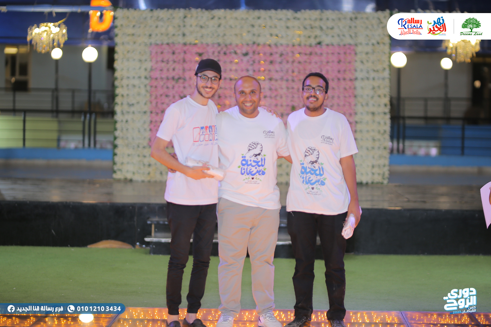
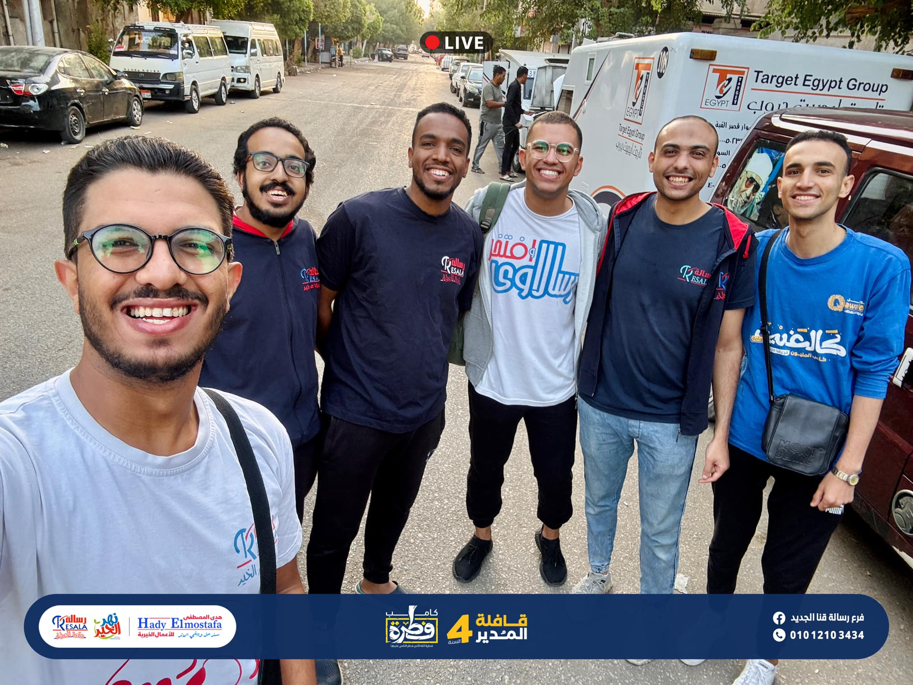
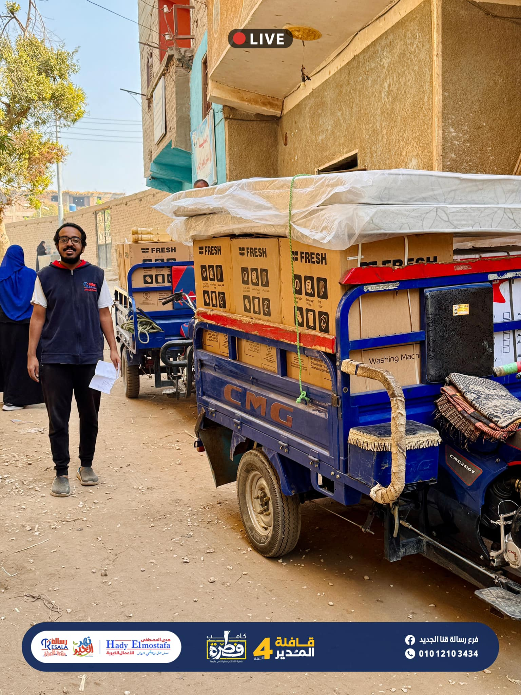
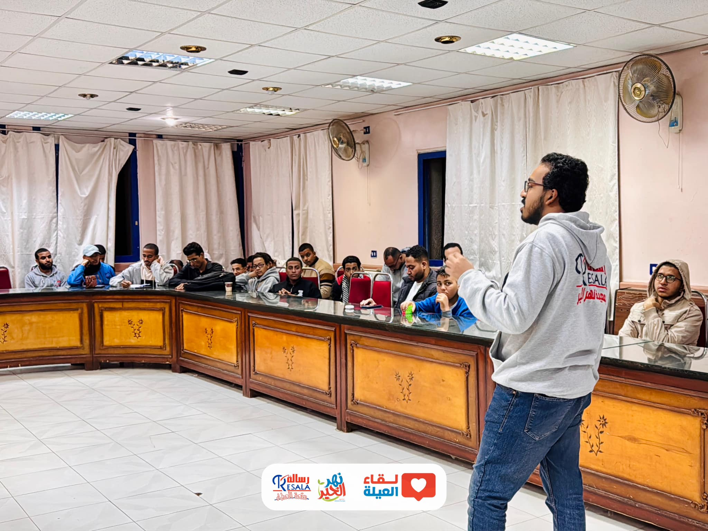
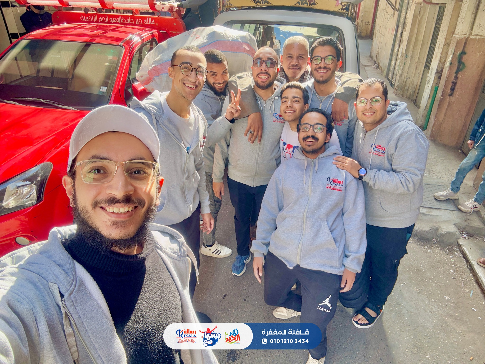
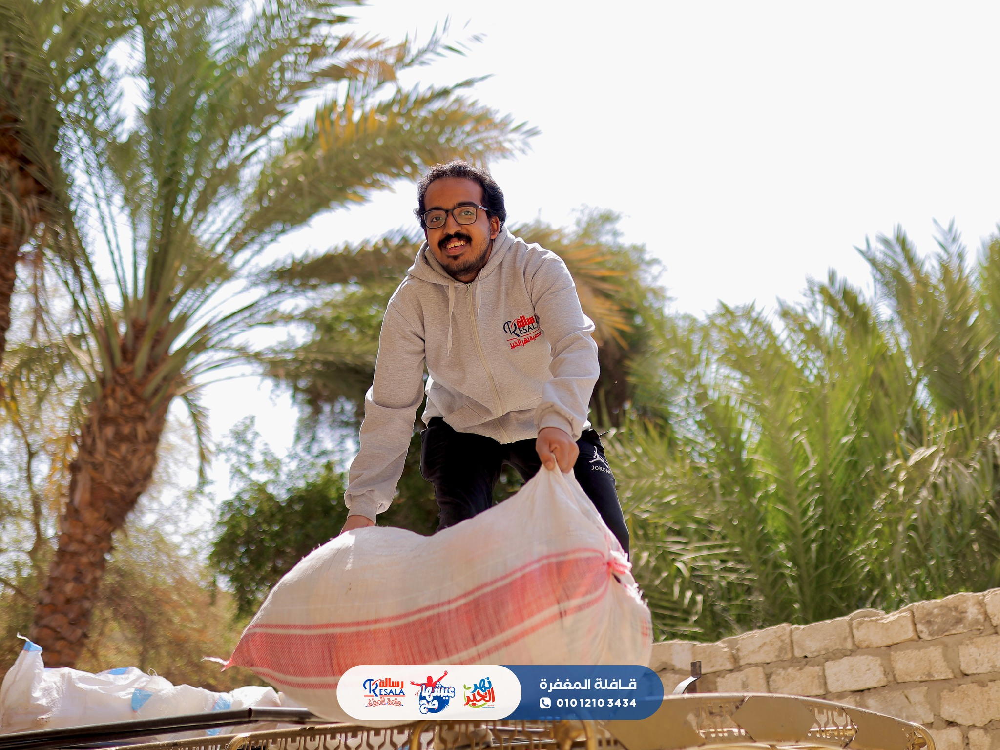
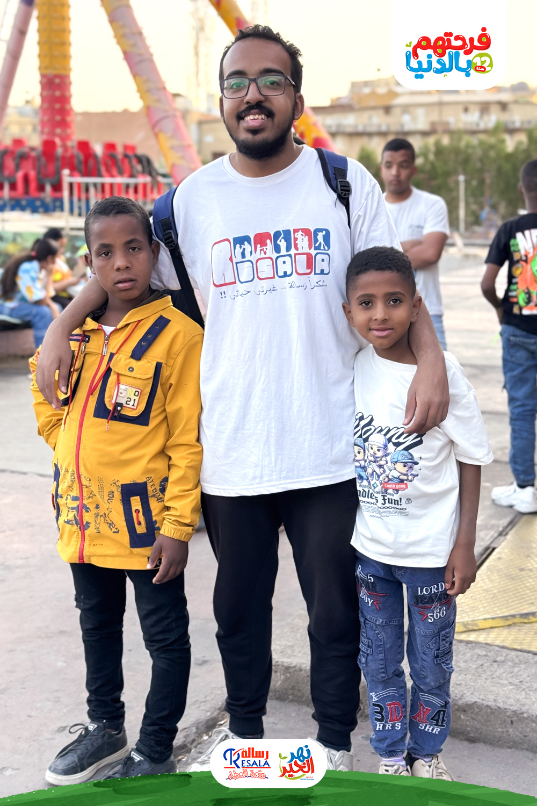
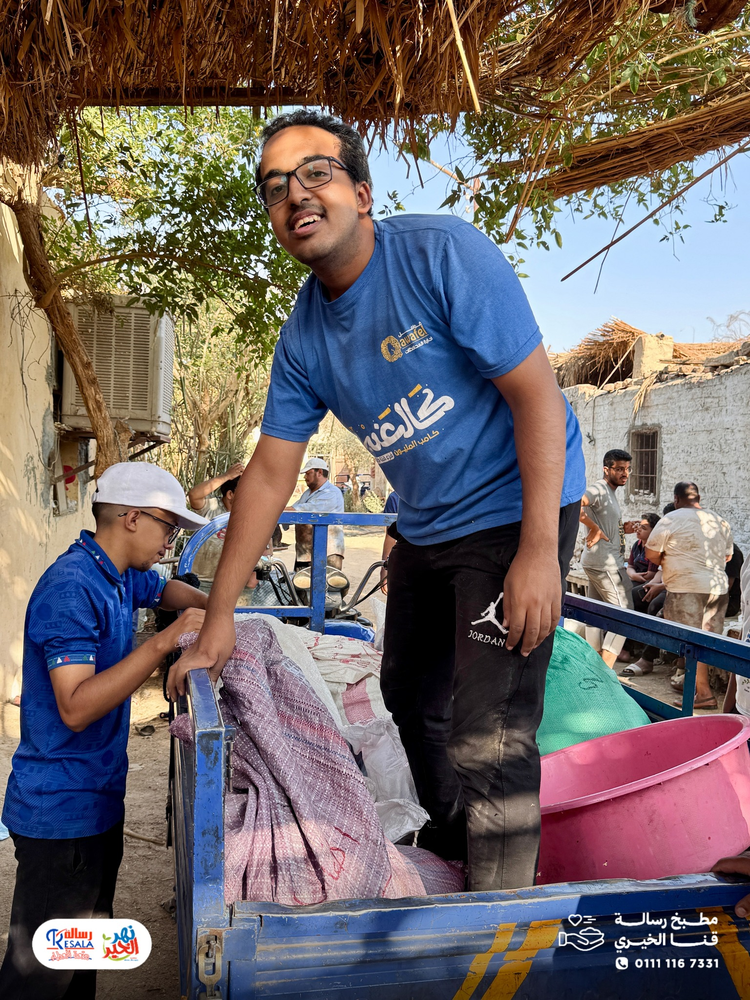
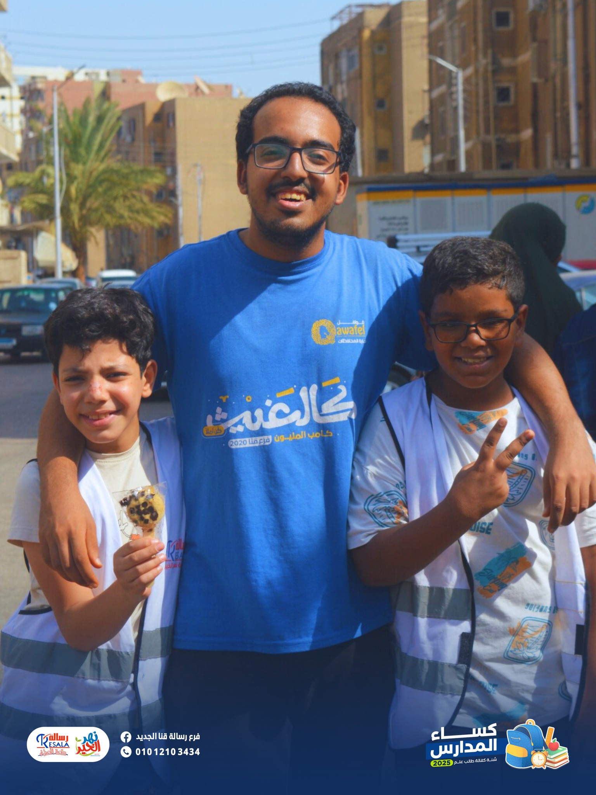
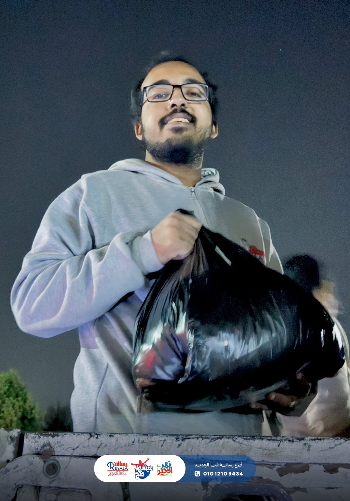

Volunteering Works
Resala Charity Organization
Volunteer at Resala Charity Organization since 2018. Progressed to Marketing and Advertising Manager in 2023. Led multiple volunteer teams and orchestrated various major events and charity convoys. Officially graduated and was appointed as a formalized manager in 2023, demonstrating a deep commitment to community service.









